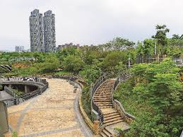
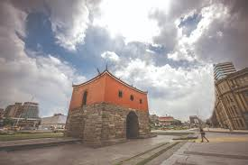
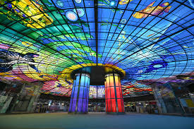

PAC-MAP
CITY SURVIVAL
NEON ARCADE EDITION
SYSTEM INIT
這不是一般的導航。基於真實開放街圖數據（OpenStreetMap），你的日常街道已轉化為危機四伏的街機迷宮！面對環境災難與縮圈危機，你必須依靠對城市的記憶來求生。
SDG 11 ARCHIVE
探索路網
打破日常導航的點對點習慣。在迷宮中穿梭，體會城市街道的真實連通性。
危機感知
動態縮圈隱喻突發危機。訓練玩家在極限時間內，對城市空間進行避險路線規劃。
機能記憶
前往真實存在的超商與餐廳收集生存物資，強化民生機能的空間記憶。
文化保護
將歷史遺跡轉化為遊戲中的安全庇護所，引導閱讀文獻，提升對文化遺產的認同。
公共空間
在公園綠地中獲得治癒效果或躲避城市霧霾，體認綠肺對市民健康的重要性。
探索路網
打破日常導航的點對點習慣。在迷宮中穿梭，體會城市街道的真實連通性。
危機感知
動態縮圈隱喻突發危機。訓練玩家在極限時間內，對城市空間進行避險路線規劃。
機能記憶
前往真實存在的超商與餐廳收集生存物資，強化民生機能的空間記憶。
文化保護
將歷史遺跡轉化為遊戲中的安全庇護所，引導閱讀文獻，提升對文化遺產的認同。
公共空間
在公園綠地中獲得治癒效果或躲避城市霧霾，體認綠肺對市民健康的重要性。
URBAN GALLERY



SURVIVAL MECHANICS
掌握地圖物件，提高生存機率
生命補給
尋找地圖上的真實餐廳與超商，進入設施即可收集物資並恢復受損的生命值。請隨時注意周遭的補給站！
文化庇護
前往紀念碑或古蹟節點。解鎖歷史文獻後，不僅能獲得分數，還能啟動限時無敵結界，讓幽靈無法靠近。
危機躲避
環境幽靈會在主要幹道上巡邏。善用背包道具或搭乘大眾運輸節點（捷運站）來進行瞬間傳送，擺脫致命追擊。
HOW TO PLAY
使用鍵盤方向鍵或 WASD 移動
* 行動裝置將自動啟用螢幕虛擬搖桿
-
吞噬路網：在地圖的道路上移動並吃掉豆子來累積基本分數。
-
躲避災害：絕對不能被幽靈抓到！同時必須在倒數結束前進入白色的安全縮圈內。
-
善用背包：按數字鍵 1~3 可使用在超商收集到的補血道具。
⚠️ 遊戲需連線至網路獲取真實地圖數據